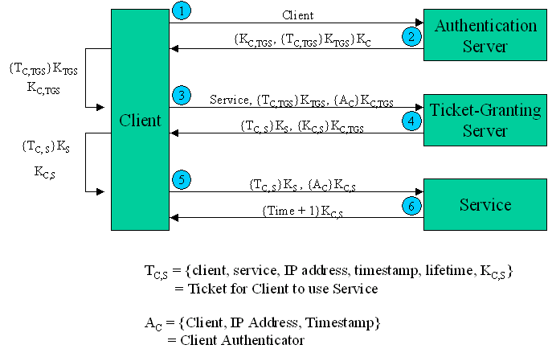

Computer Networks
Prev |
Next |
Index
Kerberos
Kerberos was created by Massachusetts Institute
of Technology as a solution to many network security problems. It is being
used in the MIT campus for reliability. The basic features of Kerberos
may be put as:
-
It uses symmetric keys.
-
Every user has a password ( key from it to the Authentication Server )
-
Every application server has a password.
-
The passwords are kept only in the Kerberos Database.
-
The Servers are all physically secure.(No unauthorized user has access
to them.)
-
The user gives the password only once.
-
The password is not sent over the network in plain text or encrypted form.
-
The user requires a ticket for each access.
A diagrammatic representation of the interfaces involved in Kerberos
may be put as:

The exchanges of information between the want of transaction by a User
with the application server and the time that they actually start exchanging
data may be put as:
- Client to the Authentication Server(AS):
The following data in plain text form are sent:
-
Username.
-
Ticket Granting Server(TGS) name.
-
A nonce id 'n'.
- Response from the Authentication Server(AS) to the Client:
The following data in encrypted form with the key shared between the AS and the Client is sent:
-
The TGS session key.
-
The Ticket Granting Ticket. This contains the following data encrypted
with the TGS password and can be decrypted by the TGS only.
-
Username.
-
The TGS name.
-
The Work Station address.
-
The TGS session key.
-
The nonce id 'n'.
- Client to the Ticket Granting Server: This
contains the following data
-
The Ticket Granting ticket.
-
Authenticator.
-
The Application Server.
-
The nonce id 'n'
- Ticket Granting Server to the Client: The
following data encrypted by the TGS session key is sent:
-
The new session key.
-
Nonce id 'n'
-
Ticket for the application server- The ticket contains
the following data encrypted by the application servers' key:
-
Username
-
Server name
-
The Workstation address
-
The new session key.
After these exchanges the identity of the user is confirmed and the
normal exchange of data in encrypted form using the new session key can
take place. The current version of Kerberos being developed is Kerberos V5.
Types of Tickets
- Renewable Tickets: Each ticket has a timer bound , beyond that no authentication exchange can take place . Applications may desire to hold tickets which can be valid for long periods of time. However, this can expose their secret session key to potential theft for equally long periods, and those stolen keys would be valid until the expiration time of the ticket(s). Simply using short-lived tickets and obtaining new ones periodically would require the client to have long-term access to its secret key, an even greater risk. Renewable tickets can be used to mitigate the consequences of theft.
- Post Dated Tickets: Applications may occasionally need to obtain tickets for use much later, e.g., a batch submission system would need tickets to be valid at the time the batch job is serviced. However, it is dangerous to hold valid tickets in a batch queue, since they will be on-line longer and more prone to theft. Postdated tickets provide a way to obtain these tickets from the AS at job submission time, but to leave them "dormant" until they are activated and validated by a further request of the AS. Again this is for additional security.
- Proxiable Tickets: At times it may be necessary for a principal to allow a service to perform an operation on its behalf. The service must be able to take on the identity of the client, but only for a particular purpose. A principal can allow a service to take on the principal's identity for a particular purpose by granting it a proxy. This ticket allows a client to pass a proxy to a server to perform a remote request on its behalf, e.g., a print service client can give the print server a proxy to access the client's files on a particular file server in order to satisfy a print request.
- Forwardable Tickets: Authentication forwarding is an instance of the proxy case where the service is granted complete use of the client's identity. An example where it might be used is when a user logs in to a remote system and wants authentication to work rom that system as if the login were local.
Time Stamps:
- Authentication: This is the time when i first authenticated myself .
- Start: This is the time when valid period starts.
- End: This is the time when valid period ends.
- Renewal time: This is the time when ticket is renewed.
- Current time: This time is for additional security. This stops using old packets. Here we need to synchronize all clocks.
Cross Realm Authentication
The Kerberos protocol is designed to operate across organizational boundaries. A client in one organization can be authenticated to a server in another. Each organization wishing to run a Kerberos server establishes its own "realm". The name of the realm in which a client is registered is part of the client's name, and can be used by the end-service to decide whether to honor a request.
By establishing "inter-realm" keys, the administrators of two realms can allow a client authenticated in the local realm to use its authentication remotely (Of course, with appropriate permission the client could arrange registration of a separately-named principal in a remote realm, and engage in normal exchanges with that realm's services. However, for even small numbers of clients this becomes cumbersome, and more automatic methods as described here are necessary). The exchange of inter-realm keys (a separate key may be used for each direction) registers the ticket-granting service of each realm as a principal in the other realm. A client is then able to obtain a ticket-granting ticket for the remote realm's ticket- granting service from its local realm. When that ticket-granting ticket is used, the remote ticket-granting service uses the inter- realm key (which usually differs from its own normal TGS key) to decrypt the ticket-granting ticket, and is thus certain that it was issued by the client's own TGS. Tickets issued by the remote ticket- granting service will indicate to the end-service that the client was authenticated from another realm.
Limitations of Kerberos
- Password Guessing: Anyone can get all privileges by cracking password.
- Denial-of-Service Attack: This may arise due to keep sending request to invalid ticket.
- Synchronization of Clock: This is the most significant limitation to the kerberos.
Public Key Authentication Protocol
Mutual authentication can be done using public key authentication. To start with let us assume A and B want to establish a session and then use secret key cryptography on that session. The purpose of this initial exchange is authenticate each other and agree on a secret shared session key.
Setup
A sends a request to AS for getting B's public key. Similarly B is trying to get the A's public key. AS sends public key of B and name of B in encrypted form using AS's private key.
Handshake
Whether it came from A or from someone else., but he plays along and sends A back a message containing A's n1, his own random number n2 and a proposed session key, Ks. When A gets this message, he decrypts it using his private key. He sees n1 in it, and hence gets sure that B actually got the message. The message must have come from B, since none else can determine n1. A agrees to the session by sending back message. When B sees n2 encrypted with the session key he just generated, he knows A got message and verified n1.
Digital Signatures
The authenticity of many legal, financial and other documents is determined by the presence or absence of an authorized handwritten signature. The problem of devising a replacement for handwritten signatures is a difficult one. Basically, what is needed is a system bu which one party can send a assigned message to other party in such a way that:
- The receiver can verify the claimed identity of sender
- The sender cannot later repudiate the contents of the message.
- The receiver cannot possibly have concocted the message himself
Message Digest
One criticism of signature methods is that they often couple two distinct functions : authentication and secrecy. Often, authentication is needed but secrecy is not. Since cryptography is slow, it is frequently desirable to be able to send signed plaintext documents.One scheme, known as MESSAGE DIGEST, is based on the idea of a one-way hash function that takes an arbitrarily long piece of plaintext and from it computes a fixed length bit string. This hash function has three important properties:
- Given p, it is easy to compute MD(P).
- Given MD(P), it is effectively impossible to find P.
- No one can generate two messages that have the same message digest.
Main Steps in Authentication
- Sender computes checksum of message and sends it to AS.
- AS returns signature block. Signature block consists of name and checksum of message in encrypted form using AS's symmetric key.
- Recipient sends signature block to AS.
- AS decrypt signature.
- verifies sender's name.
- sends checksum back to recipient.
- Recipient verifies checksum.
Image References
- http://guir.berkeley.edu/projects/osprelims/summaries/img/kerberos.gif
back to top
Prev| Next |
Index